to Picton, South Island, New Zealand!
Took the Bluebridge Ferry Livia from Wellington to Picton overnight.
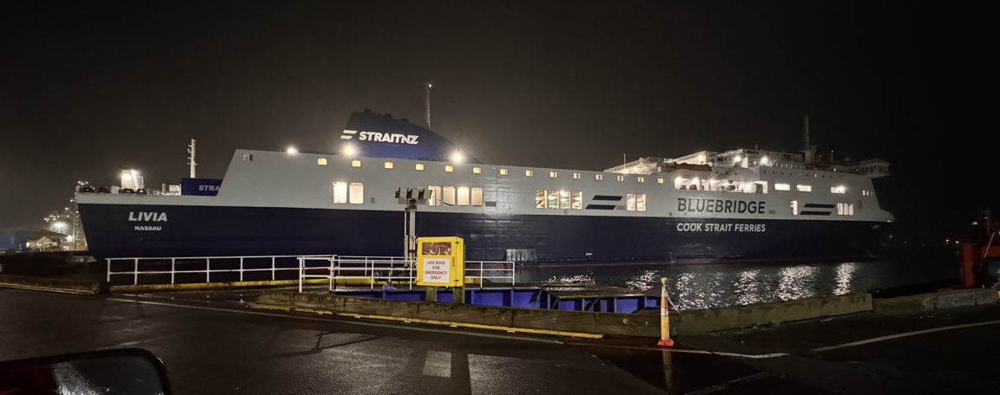
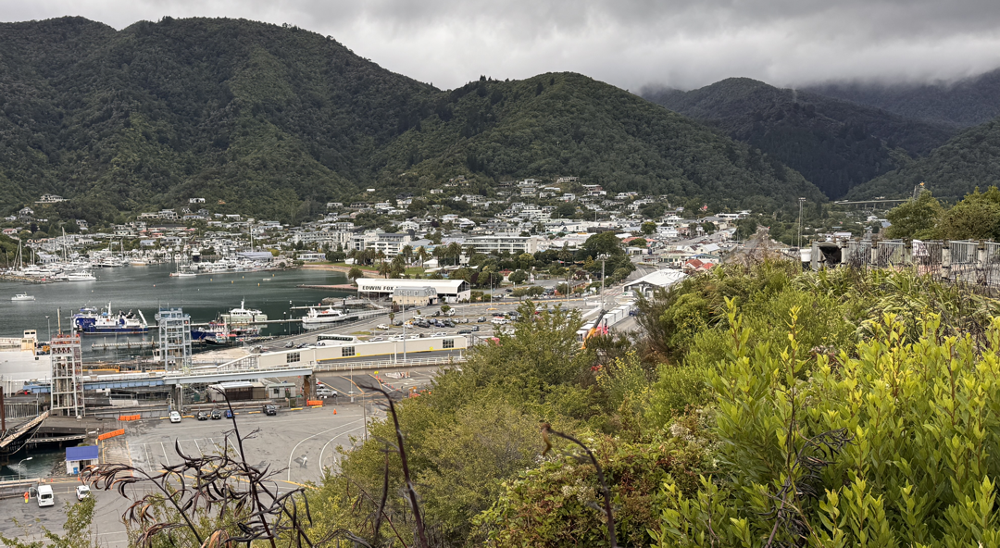
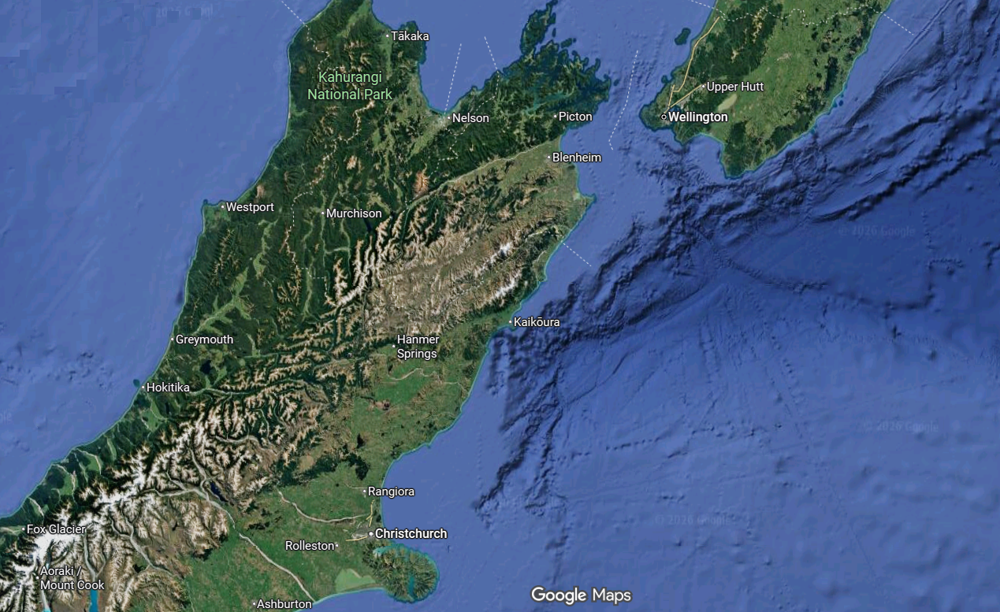
We took the hilly route to Blenheim via Linkwater and Havelock.
Beautiful walk, the upper areas loud with cicadas.
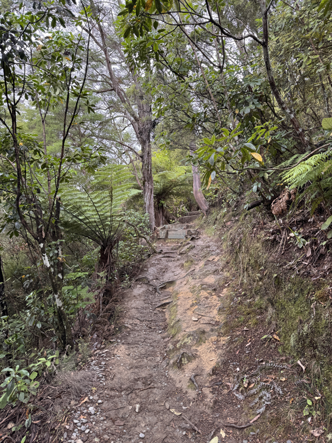
The water was an amazing green!
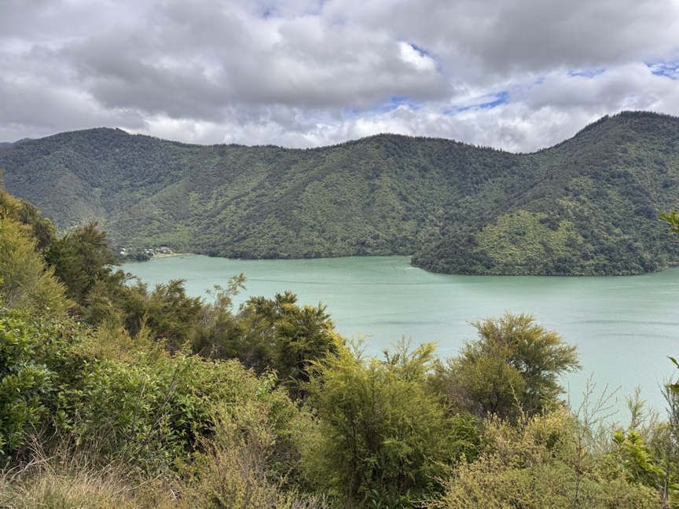
Our first 2 nights in Marlborough Region. West of Renwick and Marfells Beach
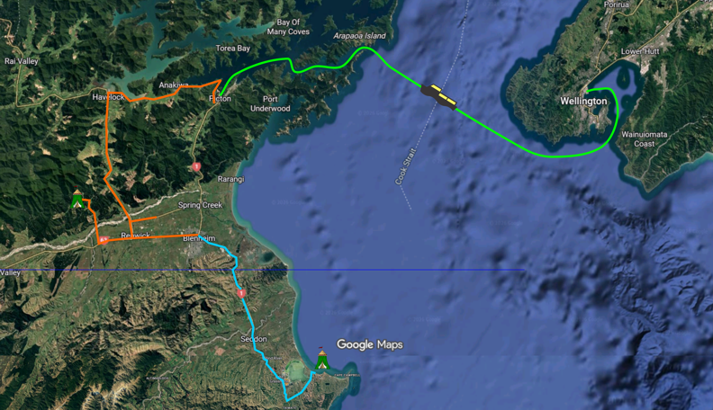
We visited Blenheim for some camping supplies, and had a wine tasting at Whitehaven.
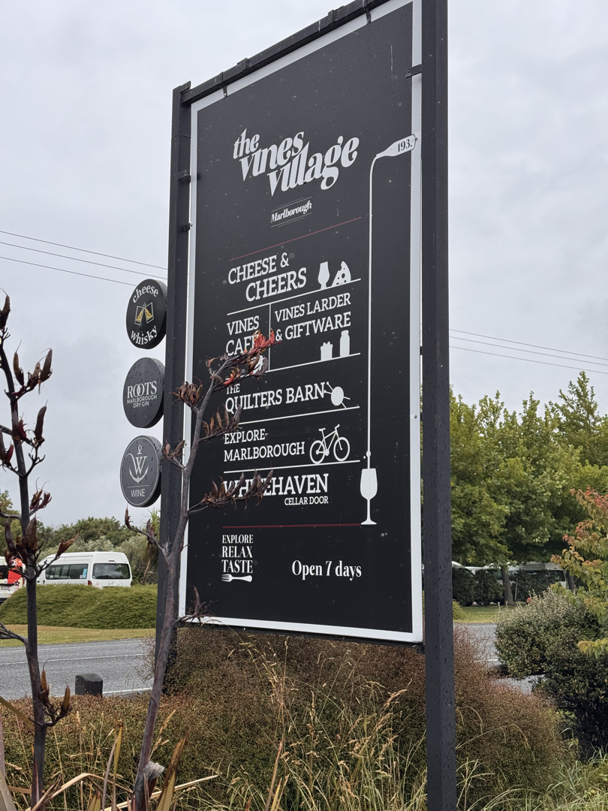
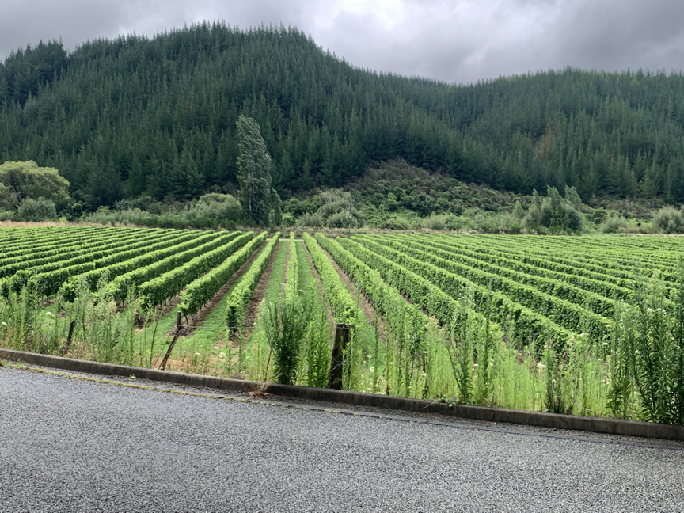
Then we camped West of Renwick for 1 night. Now we're actually camping, using Clare's Toyota Hiace Camper-van.
Onamalutu Campground Area

Marfells Beach Camping Area on the coast. Windy!!
We added a tarp for shelter outside the camper-van. Worked pretty well!
Tho' we lost a corner rivet overnight. The wind was strong, but it stopped at 12:30am and we saw the Milky Way!
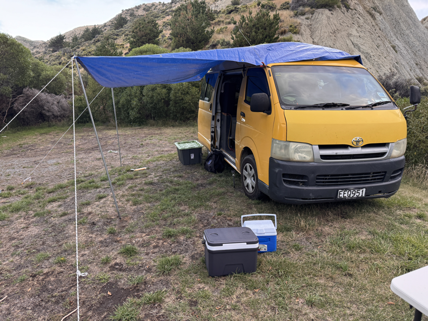
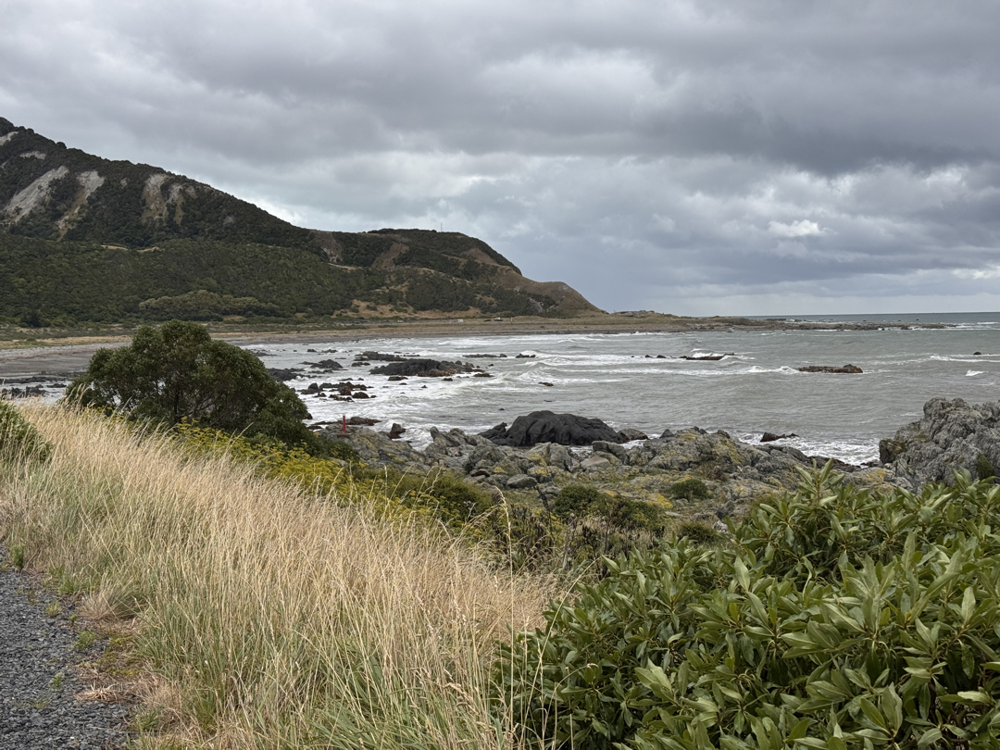
Lots of Seals on the rocks in a couple of places on the coast.
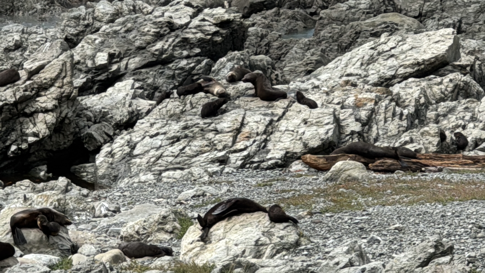
Maori Raramai Kaitiaki (Guardian)
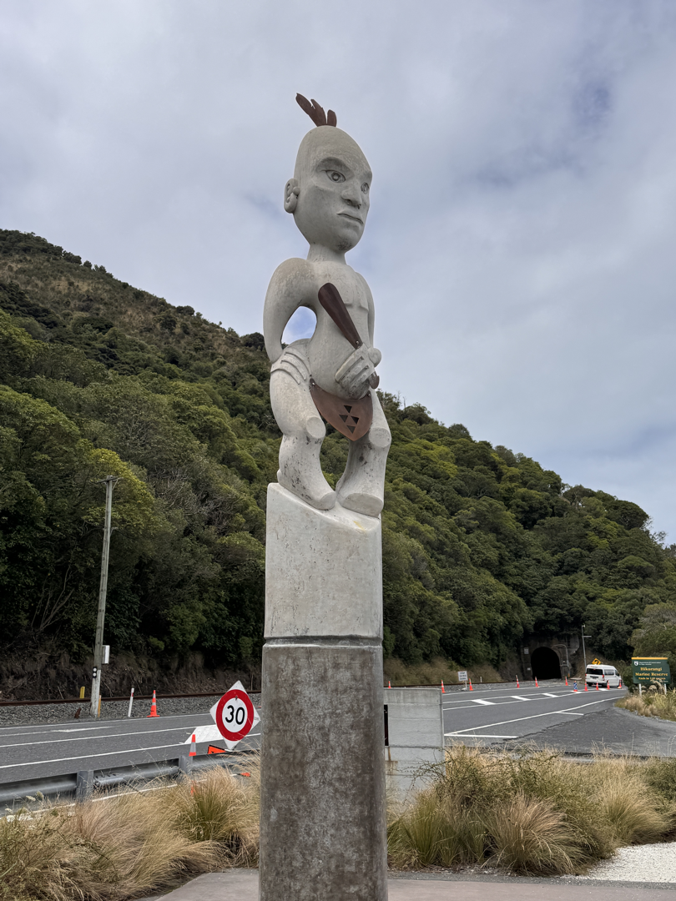
Stayed a night in a Christchurch AirBnB, and supplied up for the week at Fair.
Tentative Plan for the South Island. Must be back to Picton late afternoon 15 March.
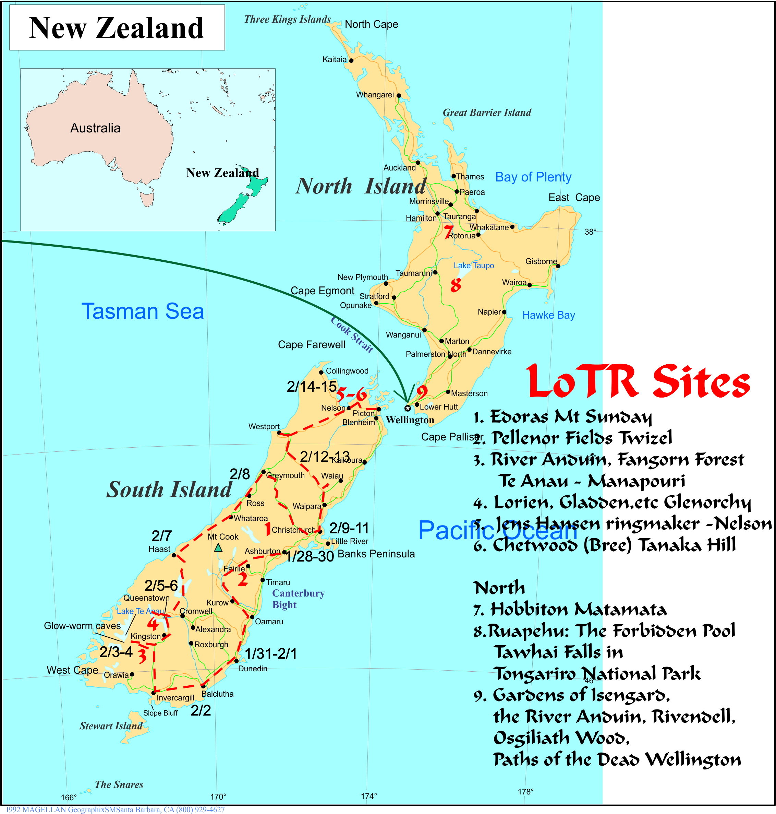
To Eastern and Southern South Island, New Zealand!
Back to Khevron's Main Page